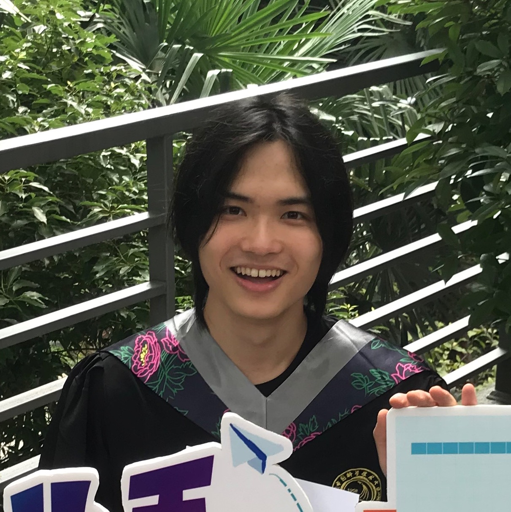

My name is Daming Yang, or in Chinese, "羊达明". The surname in Chinese means Aries.
Currently, I am working on an Astronomy master program in Leiden University in the Netherlands, from 2021 Spring to 2023 Spring.
My master project on high-z quasar at Leiden is advised by Prof. Joseph Hennawi,
Dr. Riccardo Nanni and
Dr. Jan-Torge Schindler.
The first master project was advised by Prof. Sjoert van Velzen, focusing on TDE host galaxy (Yes, the Astronomy master program at Leiden basically requires two theses).
Prior to Leiden, I was enrolled into the School of the Gifted Young (SGY) in USTC, and later followed the track of Astronomy in my senior year.
I obtained my bachelor in Astronomy at the University of Science and Technology of China (USTC) in Hefei, China in 2020,
with a thesis on the study of the AGN duty cycle, advised by Prof. Jun-Xian Wang.
Apart from astronomy, I am a fan of Nintendo, especially the
Zelda
series and Splatoon.
I also support the Spanish soccer club Real Madrid.
Cheers!